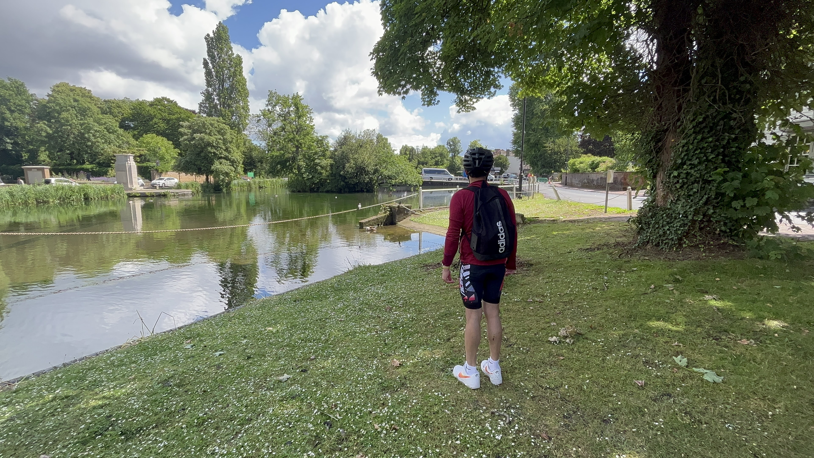
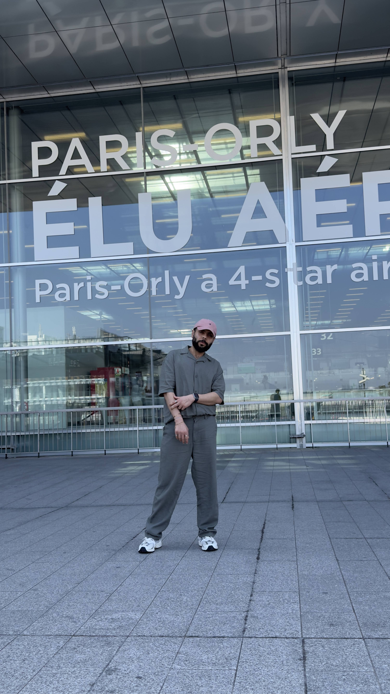
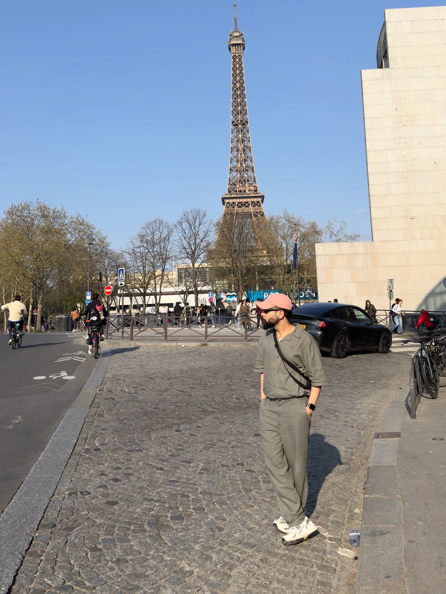
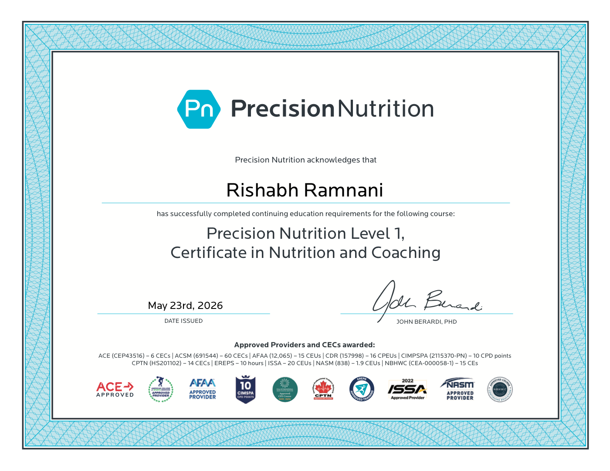

Private metabolic nutrition
Nutrition for a refined life in motion.
Bespoke body-composition coaching for founders, investors, creators, and ultra-private clients who want physique, energy, digestion, and presence without giving up restaurants, travel, or taste.
Protein
Micros
Recovery
Protein precision
Glucose-aware meals
Digestive calm
Restaurant strategy
Micronutrient density
Travel-proof nutrition
Executive body composition
Recovery rhythm
01
The nutrition operating system
Elite nutrition, plated around your biology and your calendar.
NutriRish treats protein, fibre, micronutrients, training, travel, sleep, social dinners, and stress as one composed system. No generic PDFs. No theatrical discipline. Just precise meals, elegant defaults, and calm recalibration that survive board meetings, airport lounges, late service, tasting menus, and ambitious goals.
The standard
Luxury nutrition is not restriction. It is precision that still tastes like life.
Your protocol is designed to look effortless from the outside and feel inevitable from the inside: protein anchors, produce density, flexible meals, private check-ins, and a body that keeps up with the ambition.

A plate strategy that travels
From airport lounge to evening service, the nutrition stays intact.
Scroll through the daily rhythm: protein targets, fibre minimums, hydration, restaurant calls, training windows, and recovery signals. It is nutrition for people who cannot afford decision fatigue.
02
Private practice
Body Composition
Protein targets, calorie architecture, visual check-ins, and adjustments that respect your social and travel calendar.
Metabolic Performance
Energy, appetite, sleep, digestion, cognition, and training support for calendars that rarely behave like a textbook.
Luxury Plate Integration
Restaurant playbooks, chef instructions, airport routines, event strategy, hydration cues, and discretion-first accountability.
Visual proof
A coach who understands aesthetics, travel, discipline, food, and taste.




03
Motion archive
Scroll-triggered fragments from the real nutrition lifestyle.
Every clip is a real fragment of the system: food choices, movement, travel, training, and the quiet consistency between them.
Credentialed taste
Certified by Precision Nutrition. Delivered like a private wellness atelier.
Evidence-led coaching matters. So does the way it is delivered: concise, polished, precise, and calm enough for people whose lives move fast.
View certification
Open full certificateFor high-discretion clients
Your physique should look expensive. Your nutrition should feel effortless.
Limited private roster. Built for clients who want a serious body, calm digestion, stable energy, and no public performance around the process.
Private onboarding
Weekly recalibration
Restaurant guidance
Travel macros
Produce density
Request consideration
Private nutrition coaching for a small number of serious clients.
If your standards are high and your time is expensive, begin with a private consultation. The first conversation defines your body, calendar, constraints, and what success should look like.